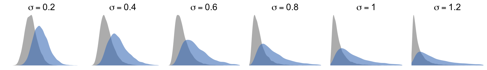

Appendix I. Additional experimental results
Theophanis Tsandilas ![]()
Géry Casiez
We present results from experiments that investigate additional scenarios, as well as other nonparametric methods. Unless explicitely mentioned in each section, we follow the experimental methodology presented in the main article. For most experiments, we focus on \(n = 20\).
1 Main effects in the presence of interactions
In all experiments assessing Type I error rates reported in our article, we assumed no interaction effects. However, we also need to understand whether weak or strong interaction effects could affect the sensitivity of the methods in detecting main effects. This experiment evaluates the Type I error rate of the methods in the presence of an interaction effect alone, or alternatively, in the presence of a simultaneous main effect. We focus again on the three 2-factor experimental designs that we evaluated for our previous experiment and set the sample size to \(n = 20\).
To simulate populations in which interactions emerge in the absence of main effects, we examine perfectly symmetric cross-interactions. To this end, we slightly change the method we use to encode the levels of each factor, such that levels are uniformly positioned around 0. For a factor with three levels, we numerically encode the levels as \(\{-0.5, 0, 0.5\}\). For a factor with four levels, we encode them as \(\{-0.5, -0.1667, 0.1667, 0.5\}\).
Interaction effect only. We first test how the interaction effect alone influences the Type I error rate on \(X_2\). Figure 2 presents our results. We observe that both PAR and ART fail for many configurations. Error rates are especially high in the case of the \(4 \times 3\) within-subjects design and the \(2\times 4\) mixed design under the log-normal and exponential distribution. ART exhibits the worst performance. In constrast, RNK and INT keep error rates close to nominal levels. However, when interaction effects become sufficiently large (\(a_{12} > 4\)), we observe that under the binomial and ordinal scale, they also start inflating errors.
Interaction effect combined with main effect. We also evaluate the Type I error rate on \(X_2\) when the interaction effect is combined with a main effect on \(X_1\). Figure 3 presents our results. The error rates of ART and PAR now explode for all non-normal distributions and all three designs. But the performance of RNK and INT is also affected. Their error rates become extremely low under continuous distributions, which suggests a lack of power in detecting small main effects when strong effects of other factors are combined with strong interactions. In contrast, the Type I error of the two methods explodes under the binomial and ordinal scale. Interestingly, RNK exhibits the best performance in these tests.
2 Missing data
We evaluate how missing data can affect the performance of the four methods. Specifically, we study a scenario, where a random sample of \(10\%\) of the observations is missing. Missing observations lead to unbalanced designs. However, we emphasize that our scenario does not cover systematic imbalances due to missing data for specific levels of a factor.
Main effects. Figure 4 presents Type I error rates for the main effect of \(X_2\) as the magnitude of the main effect of \(X_1\) increases. We observe that missing data make the error rate for ART to increase even further, with a larger increase for the mixed design. This is also the case for the normal distribution. In contrast, the accuracy of the three other methods does not seem to be affected.
Interaction effects. Figure 5 and Figure 6 present Type I error rates for the interaction effect in the presence of a single main effect or two parallel main effects. The error levels for all methods, including ART, are now very similar to the ones observed with no missing data.
3 Log-normal distributions
We conduct an experiment to evaluate log-normal distributions with a wider range of \(\sigma\) parameters (see Figure 7), in particular distributions with less variance, which present a lower degree of skew.

Main effects. Figure 8 presents our results on Type I error rates for main effects. As expected, ART’s inflation of error rates is less serious when distributions are closer to normal, while the problem becomes worse as distributions are more skewed.
Interaction effects. We observe similar patterns for the Type I error rate of the interaction effect in the presence of a single main effect (Figure 9) or two parallel main effects (Figure 10). As shown in Figure 10, any advantage of ART over RNK and INT for testing interaction disappears even when distrubitions exhibit light skew levels. We also observe again that the performance of RNK and INT remains identical across all skew levels.
4 Binomial distributions
We also evaluate a wider range of parameters for the binomial distribution. We focus on the lower range of probabilities \(p\). However, we expect results to be identical for their symmetric probabilities \(1-p\). Specifically, we test \(p=.05\), \(.1\), and \(.2\), and for each, we consider \(k=5\) and \(10\) task repetitions (Bernoulli trials).
Main effects. We present our results for the main effect in Figure 11. We observe that ART’s Type I error rates increase as the number of repetitions decreases and the probability of success approaches zero, reaching very high levels when \(k=5\) and \(p=.05\). This trend is consistent across designs. The other methods maintain low error rates. However, their error rates fall below nominal levels when the magnitude of the effect on \(X_1\) grows beyond a certain threshold, indicating a loss of power in these cases.
Interaction effects. Figure 12 shows similar patterns for the Type I error rate of the interaction effect in the presense of a single main effect. When both main effects increase beyond a certain level (see Figure 13), all methods seem to fail to control the error rate. ART demonstrates again the worst behavior, systematically infating error rates even when main effects are absent.
5 Ordinal data
Given the frequent use of ART with ordinal data, we evaluate our complete set of ordinal scales, based on both equidistant and flexible thresholds, with additional experimental designs.
Main effects. Figure 14 presents Type I error rates for the main effect. ART preserves error rates at nominal levels under the \(2 \times 3\) between-subjects design and the \(2 \times 3\) mixed design, as long as thresholds are equidistant. Under the two within-subject designs, it inflates error rates, especially when there are fewer ordinal levels with flexible thresholds.
Interaction effects. Figure 5 and Figure 6 present Type I error rates for the interaction effect in the presence of a single main effect or two parallel main effects. These results lead to similar conclusions. Even in cases where ART keeps error rates close to nominal levels (e.g., under the between-subjects design with equidistance thresholds), the performance of parametric ANOVA is constantly better.
6 ART with median alignment
We evaluate a modified implementation of ART (ART-MED), where we use medians instead of means to align ranks. This approach draws inspiration from results by Salter and Fawcett (1993), showing that median alignment corrects ART’s instable behavior under the Cauchy distribution. We only test the \(4 \times 3\) within-participants design for sample sizes \(n=10\), \(20\), and \(30\). For this experiment, we omit the RNK method and only present results for non-normal distributions.
We emphasize that Salter and Fawcett (1993) only apply mean and median alignment to interactions. Our implementation for main effects is based on the alignment approach of Wobbrock et al. (2011), where we simply replace means by medians.
Main effects. Our results presented in Figure 17 demonstrate that median alignment (ART-MED), or at least our implementation of the method, is not appropriate for testing main effects. Although Type I error rates are now lower for the Cauchy distribution compared to the original method, they are still above nominal levels. In addition, they are significantly higher for all other distributions.
Interaction effects. In contrast, median alignment works surprisingly well for interactions, correcting deficiencies of ART, especially when main effects are absent or weak. Figure 18 and Figure 19 present our results. Despite this improved performance, we cannot recommend using the method because it still cannot compete with INT. Additionally, its advantages over parametric ANOVA are only apparent for the Cauchy distribution.
7 Nonparametric tests in single-factor designs
We compare PAR, RNK, and INT to nonparamatric tests for within- and between-subjects single-factor designs, where the factor has two, three, or four levels. Depending on the design, we use different nonparametric tests. For within-subjects designs, we use the Wilcoxon sign-rank test if the factor has two levels (2 within) and the Friedman test if the factor has three (3 within) or four (4 within) levels. For between-subjects designs (2 between, 3 between, and 4 between), we use the Kruskal–Wallis test.
Power. Figure 20 compares the power of the various methods as the magnitude of the main effect increases, where we use the abbreviation NON to designate a nonparametric test. We observe that primarily INT, but also RNK, generally exhibit better power than the nonparametric tests. Differences are more pronounced for within-subjects designs, corroborating Conover’s (2012) observation that the rank transformation results in a test that is superior to the Friedman test under certain conditions.
We expect that the accuracy of ANOVA on rank-transformed values will decrease with smaller samples. However, our tests with smaller samples of \(n=10\) show that INT remains robust and still outperforms other nonparametric methods. Although it is possibe to couple INT with permutation testing for higher accuracy (Beasley, Erickson, and Allison 2009), we have not explored this possibility here.
Type I error rate under equal and unequal variances. Figure 21 presents the rate of positives under conditions of equal (\(r_{sd} = 0\)) and unequal variances (\(r_{sd} > 0\)). While this rate can be considered a Type I error rate when variances are equal, interpreting it under other conditions requires special attention because the hypothesis of interest may differ among methods. Parametric ANOVA is particularly sensitive to unequal variances when distributions are skewed because it tests differences among means. While the normal distributions of the latent space have the same means, this is not the case with the skewed distributions of the transformed variable, which have the same median but different means. All nonparametric methods we tested use ranks, which preserve medians and mitigate this problem. However, their rate of positives can still exceed \(5\%\) under certain conditions.
For between-subjects designs, we observe that the Kruskal–Wallis test and RNK yield very similar results. This is not surprising, as RNK is known to be a good approximation of the Kruskal–Wallis test (Conover 2012). INT’s positive rates are similar, although slightly higher under the binomial distribution. For within-subjects designs, differences among methods are more pronounced. The Wilcoxon sign-rank test (2 within) inflates rates well above \(5\%\), demonstrating that the test is not a pure test of medians. In contrast, the Friedman test (3 within and 4 within) provides the best control among all methods.
Nevertheless, in addition to their greater power compared to the Friedman test, RNK or INT present other advantages, such as using common ANOVA-based procedures to partly correct issues associated with unequal variances. For instance, by combining a sphericity test on the ranks of RNK and INT with a Greenhouse–Geisser correction, we were able to reduce their positive rates, well below those of the Friedman test.
8 ANOVA-type statistic (ATS)
We compare PAR, RNK, and INT to the ANOVA-type statistic (ATS) (Brunner and Puri 2001) for two-factor designs. We use its implementation in the R package nparLD (Noguchi et al. 2012), which does not support between-subjects designs. Thus, we only evaluate it for the \(4 \times 3\) within-subjects and the \(2 \times 4\) mixed designs.
Type I error rates: Main effects. Figure 22 presents Type I error rates for the main effect of \(X_2\). Under the mixed design, RNK, INT, and ATS exhibit very similar error rates, which are close to nominal levels. In the within-subjects design, the error rates of ATS tend to be slightly above \(5\%\). Additionally, unlike the other methods whose error rates drop significantly below \(5\%\) when the effect of \(X_1\) becomes stronger under binomial and ordinal scales, the power of ATS does not seem to be affected in these cases.
Type I error rates: Interactions. Figure 23 presents Type I error rates for the interaction in the presence of a single main effect. Results are again very similar for all three nonparametric methods under the mixed design. In contrast, the error rates of ATS tend to be lower than nominal levels under the within-subjects design, often falling below \(4\%\). When two parallel main effects are present, ATS and RNK lead to very similar trends (see Figure 24). Overall, INT appears to be a more robust method with the exception of the binomial distribution, for which error rates are higher for this method.
Power. We also evaluate the power of the methods for the two main effects (see Figure 25 and Figure 26) and the interaction effect (see Figure 27). TODO:
9 Generalizations of nonparametric tests (van der Waerden, Kruskal-Wallis and Friedman)
Type I error rates.
Power.
References
Beasley, T Mark, Stephen Erickson, and David B Allison. 2009. “Rank-Based Inverse Normal Transformations Are Increasingly Used, but Are They Merited?” Behav Genet 39 (5): 580–95. https://doi.org/10.1007/s10519-009-9281-0.
Brunner, Edgar, and Madan L. Puri. 2001. “Nonparametric Methods in Factorial Designs.” Statistical Papers 42 (1): 1–52. https://doi.org/10.1007/s003620000039.
Conover, W. Jay. 2012. “The Rank Transformation—an Easy and Intuitive Way to Connect Many Nonparametric Methods to Their Parametric Counterparts for Seamless Teaching Introductory Statistics Courses.” WIREs Computational Statistics 4 (5): 432–38. https://doi.org/https://doi.org/10.1002/wics.1216.
Noguchi, Kimihiro, Yulia R. Gel, Edgar Brunner, and Frank Konietschke. 2012. “nparLD: An r Software Package for the Nonparametric Analysis of Longitudinal Data in Factorial Experiments.” Journal of Statistical Software 50 (12): 1–3. https://doi.org/10.18637/jss.v050.i12.
Salter, K. C., and R. F Fawcett. 1993. “The Art Test of Interaction: A Robust and Powerful Rank Test of Interaction in Factorial Models.” Communications in Statistics - Simulation and Computation 22 (1): 137–53. https://doi.org/10.1080/03610919308813085.
Wobbrock, Jacob O., Leah Findlater, Darren Gergle, and James J. Higgins. 2011. “The Aligned Rank Transform for Nonparametric Factorial Analyses Using Only Anova Procedures.” In Proceedings of the SIGCHI Conference on Human Factors in Computing Systems, 143–46. CHI ’11. New York, NY, USA: Association for Computing Machinery. https://doi.org/10.1145/1978942.1978963.